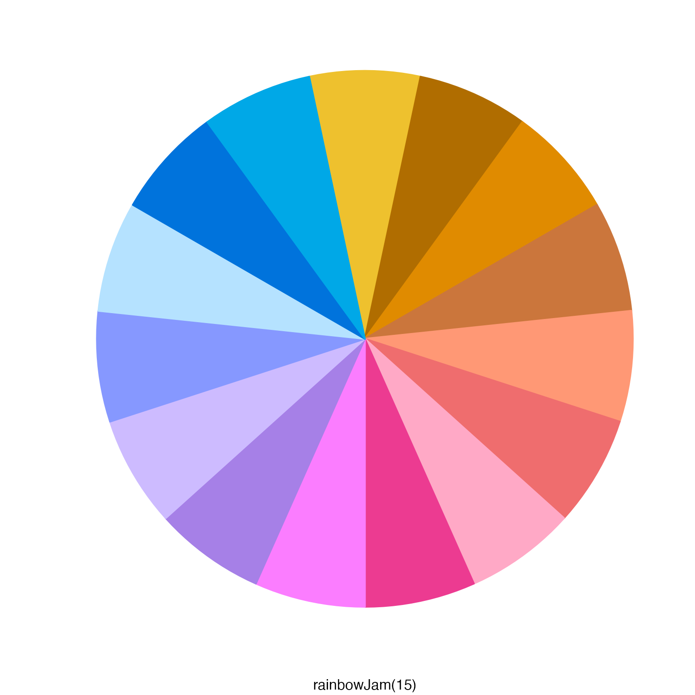
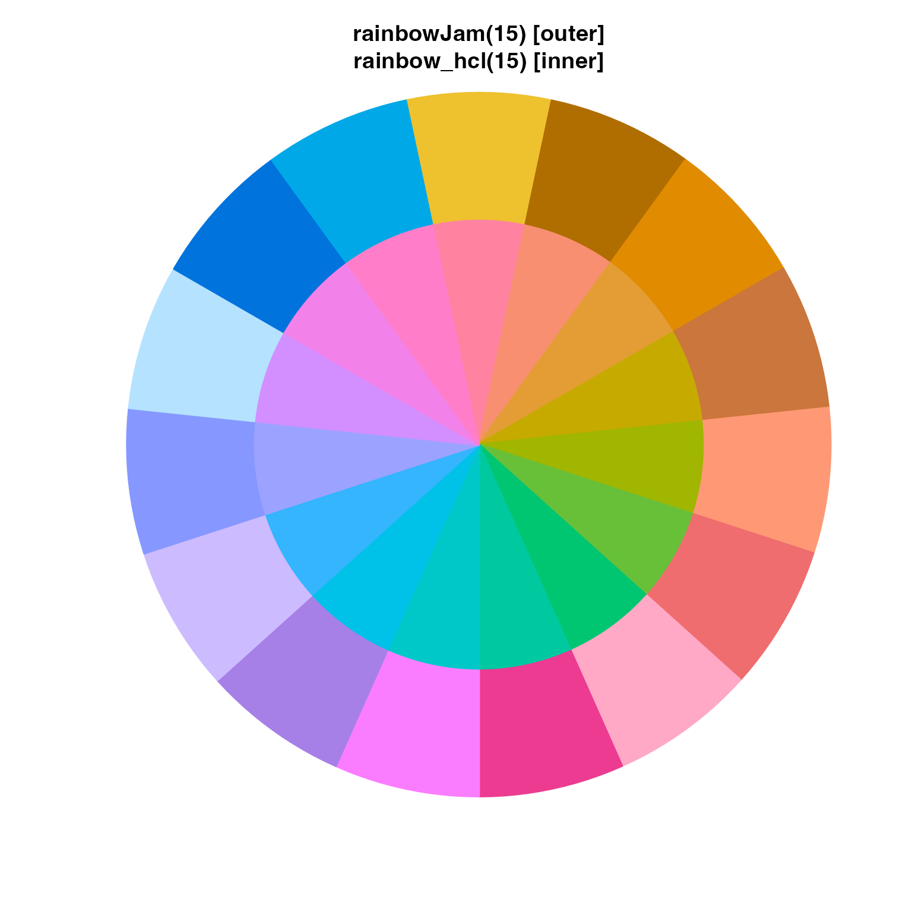
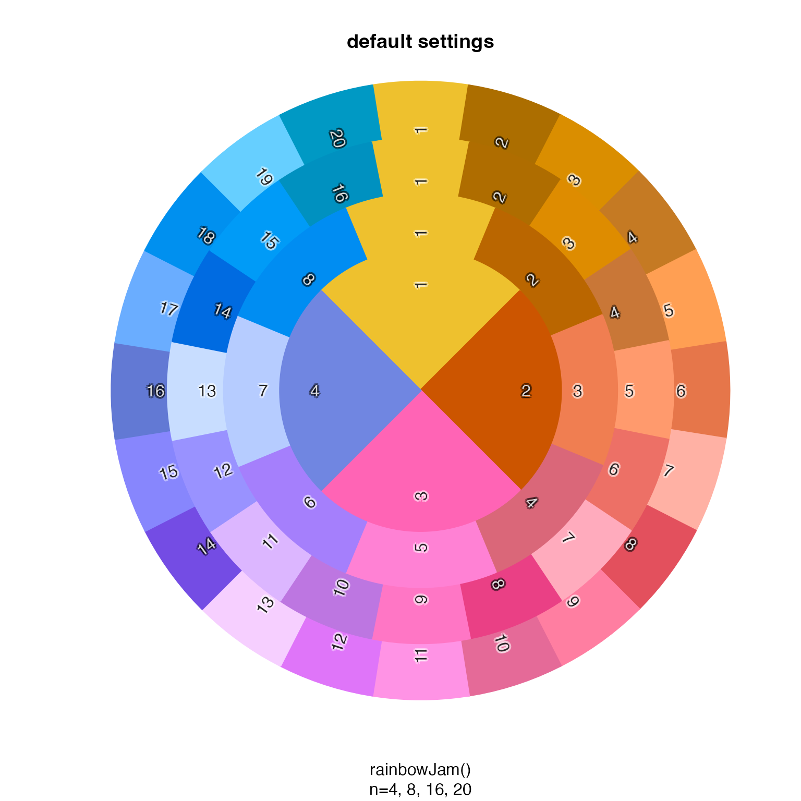
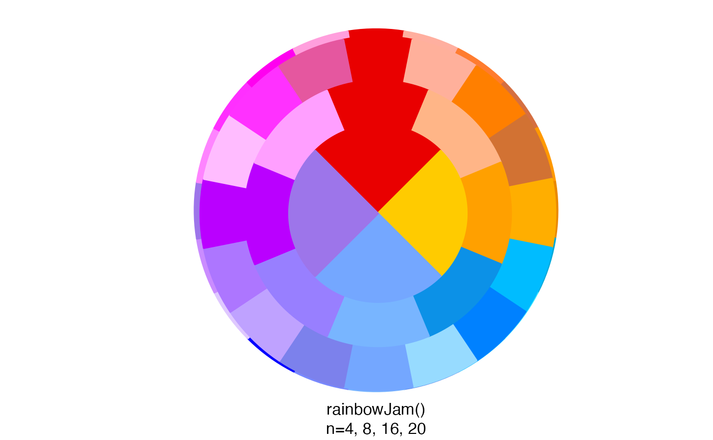

Show colors spread around a pie chart
color_pie( colors, border = colors, lwd = 2, radius = 1.5, label_radius = radius * 0.75, add = FALSE, init.angle = NULL, clockwise = TRUE, ... )
Arguments
| colors |
|
|---|---|
| border |
|
| lwd | numeric value used to define the line width of the pie wedge borders. |
| radius | numeric value representing the radius of the
overall pie chart, where |
| label_radius | numeric value indicating the radius used for labels, intended to allow labels to appear inside each pie wedge. |
| add | logical indicating whether to draw the pie chart onto the existing plot device, without creating a new plot. |
| ... | additional arguments are passed to |
Details
This function simply displays colors in a pie chart format.
If the input is a list, each list is used to produce
layers of a pie chart, in order to help compare colors
from each vector in the list.
See also
Other colorjam display:
showDichromat()
Examples
color_list <- list(rainbowJam=rainbowJam(n), rainbow_hcl=colorspace::rainbow_hcl(n, c=120)); color_pie(color_list, sub="inside ring:rainbow_hcl()\nouter ring: rainbowJam()")rainbow_list <- lapply(4*c(5,4,2,1), function(n){ rainbowJam(n, nameStyle="none"); }); color_pie(rainbow_list, sub="rainbowJam()\nn=4, 8, 16, 20")